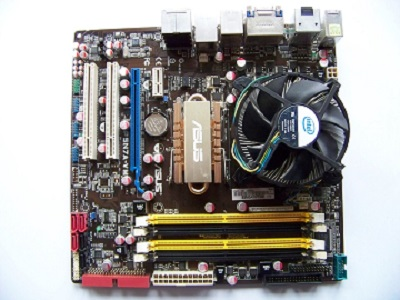

Moderkort
Moderkortet är som datorns nervsystem, ett stort kretskort med ett antal uttag där mindre kretskort kan kopplas in exempelvis: processor, instickskort (dvs grafikkort, ljudkort osv). Alla delar i datorn ansluts till moderkortet. Ett moderkort binder delarna i ett elektroniskt system, exempelvis i en dator där uttagen utgörs av buss-anslutningar och anslutningar för andra kablar. Buss (elektronisk term) det är ett system av gemensamma ledningar som förbinder digitala moduler. Här bör man vara någa med formfaktor när man köper moderkort så att det passar till chassit